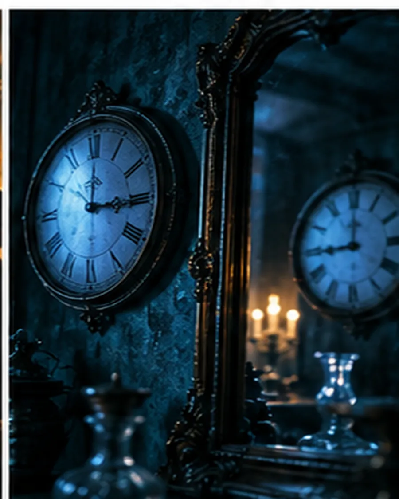

Unsolved Files - Mystery Logic Puzzles Solved with Diagrams & Evidence

Case of the dayThe Clock at the Barber Shop
During a haircut, the clock a man could see read 8:20. Find the real time and match it to four alibi gaps.
Open the file
Case of the dayDuring a haircut, the clock a man could see read 8:20. Find the real time and match it to four alibi gaps.
Open the file